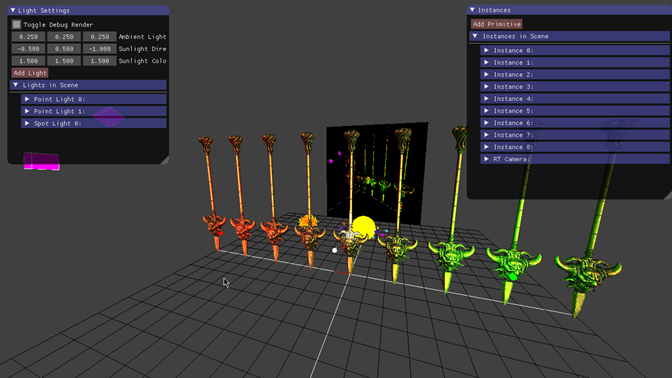
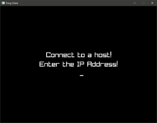
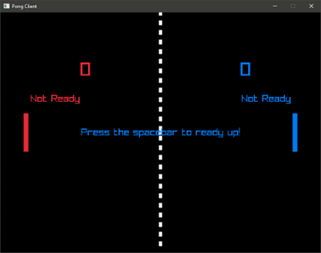

OpenGL Engine
This is a project I worked on in my second year at AIE during the course's computer graphics module.
This is a barebones OpenGL C++ rendering engine, focusing on learning the fundamentals of 3D rendering techniques and engine architecture.
What I ended up with was a rendering engine that supported: renderining primitives, rendering meshes from file, basic shaders, basic direct lighting using phong shading,
normal mapping, direct PBR lighting using oren-nayar and cook-torrance shading models, basic key frame animation in an object hierarchy (not skinned meshes),
virtual cameras using render targets, particle systems (broken billboarding), development UI using ImGUI to interact with the scene.
|
 |
Third Party Libraries/Packages used: GLFW, glad, glm, stb_image.h, assimp, imgui
BCNet
This is a C++ library I worked on for the complex game systems module at my second year of AIE, focused on writing a modular library for games.
With this project I wrote a generalized high-level networking library utilizing Valve's GameNetworkingSockets to handle the low level networking.
As a small demo to demonstrate the library, I worked on a clone of Pong allowing for a two player game over a network.
|
 |
 |
Third Party Libraries/Packages used: Raylib, GameNetworkingSockets